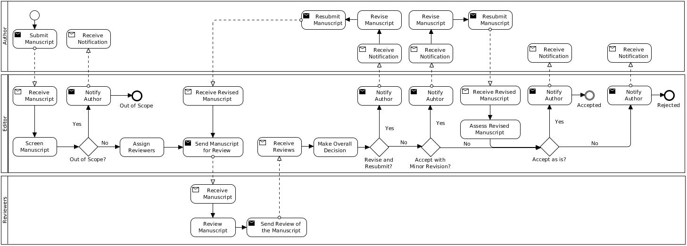
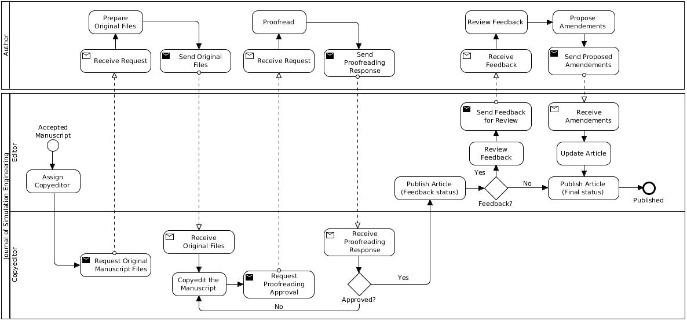

About
Overview
The peer-reviewed and peer-published Journal of Simulation Engineering (JSimE) is dedicated to the accessible dissemination of research results in the broad area of simulation engineering to the global modeling and simulation community by providing True Open Access.
True Open Access means that the journal is not only accessible to readers, but also to authors who do not have to pay excessive publication charges. It also means that research results are not just reported in PDF files with limited interactivity and accessibility, but are available in the more accessible HTML format, which allows improved text retrieval, analysis and indexing, in-document linking, semantic annotations, multi-media contents and interactivity.
The focus of the journal is on concepts, theories and techniques for the design and implementation of simulations, simulators and simulation frameworks, including requirements analysis, modeling languages, model engineering, user interface design and development methodologies (like agile or model-driven)
Scope
The journal’s scope encompasses all areas of simulation engineering, including
- development environments, e.g., integrated tool chains;
- execution environments, e.g., architectures for parallel and distributed simulation, using mobile devices and cloud infrastructure;
- integrating visualization technologies and statistical tools in support of verification, validation and understanding of simulation models and results;
- support of methodologies for the design and execution of simulation experiments;
- assessment methods, e.g., software testing, metrics, verification and validation, measurements and evaluation of various aspects of development processes and their products;
- simulation project management, e.g., technology choices, productivity factors, cost models, maintenance and evolution, and organizational issues.
Types of Publications
- Research Articles that report results of primary research and meet the highest quality standards, as measured by originality and significance of the contribution, and the clarity of exposition. Normally, they should be accompanied by one or more simulation programs that demonstrate their issues and can be published together with the article, preferably on the JSimE website.
- Surveys that contribute an analysis or perspective to advance our understanding of the topic under investigation and make it accessible to a broad community of simulation researchers and practitioners.
- Tutorials that explain, instruct, show or demonstrate the use of simulation and visualization platforms and tools, or analysis methods.
- Book Reviews that provide a critical assessment of the book within the context of the simulation engineering area, describing and evaluating its quality and significance to the modeling and simulation community.
Special Sections
JSimE occasionally publishes collections of articles sharing a common theme, in a Special Section. The articles in a special section are often derived from presentations at workshops. Often some of the reviewing and editing is undertaken by the workshop organizers in conjunction with the journal editor. If you would like to suggest a special section, please email the journal editor with details.
Peer Review Process
The JSimE peer review process can be summarized into two sub-processes illustrated in Figure 1 (i.e., pre-acceptance peer review process) and Figure 2 (i.e., post-acceptance peer review process).
 Figure 1. Pre-Acceptance Peer Review Process
The peer review process starts when the author submits the manuscript to the journal. Once received, the manuscript is screened to check if it is in line with the scope and aim of the journal, and adheres to the Author Guidelines. The quality of the manuscript is not assessed at this point. If decided not suitable, the manuscript is not reviewed any further and the author is notified that the manuscript is “Out of Scope” of the journal.
Otherwise, the editor identifies and assigns at least 2 peer reviewers to assess the originality, quality and relevance of the manuscript. Once all reviewers replies back their detailed assessment report with recommendations and comments on the manuscript, the editor makes an overall decision whether to Accept as is, Accept with Minor Revision, Revise and Resubmit, or Reject the manuscript.
If the editor decides the author needs to Revise and Resubmit, the editor notifies the author and requests the resubmission of a revised version accompanied with a letter answering all reviewers’ recommendations and comments. Once resubmitted, the editor sends the revised manuscript to another round of review by the same reviewers (if possible) and the process repeats the previous described reviewing steps.
If Accepted with Minor Revision, the editor notifies the author and requests the resubmission of a revised version accompanied with a letter answering all reviewers’ recommendations and comments. Once resubmitted, the editor assesses the revised manuscript and makes a final decision whether to accept the manuscript.
If Accepted, the editor notifies the author and initiates the post-acceptance process illustrated in Figure 2.
If Rejected, the editor notifies the author and the process finishes.
 Figure 2. Post-Acceptance Peer Review Process
The editor assigns a copyeditor who requests the original manuscript files to the author. Once the files are received, the copyeditor generates the manuscript in HTML and PDF formats.
The copyeditor then sends the copyedited manuscript to the author for proofreading and approval. If not approved, the copyeditor makes the necessary changes and another round of proofreading and approval is conducted. Otherwise, the article is published online. For a period of 60 days readers can send feedback.
If feedback is received for the article, the editor assesses if they are appropriate and they are communicated to the author who may make amendments to the article accordingly. If amendments are made, the editor makes the necessary updates and releases the article.